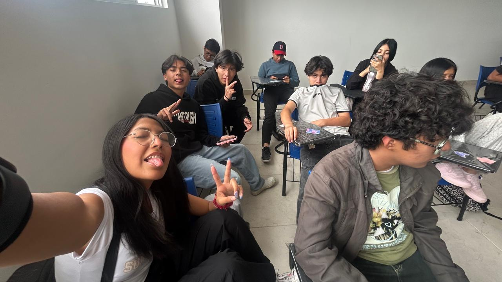
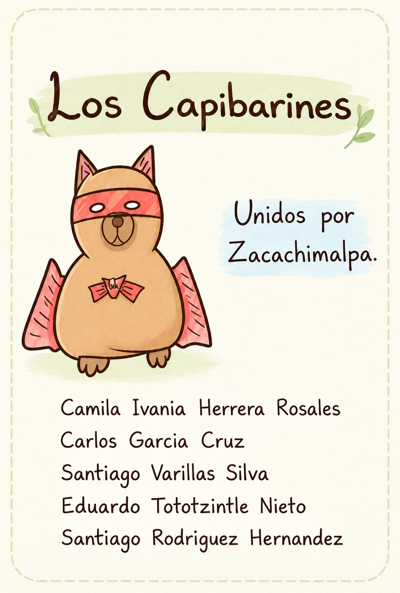
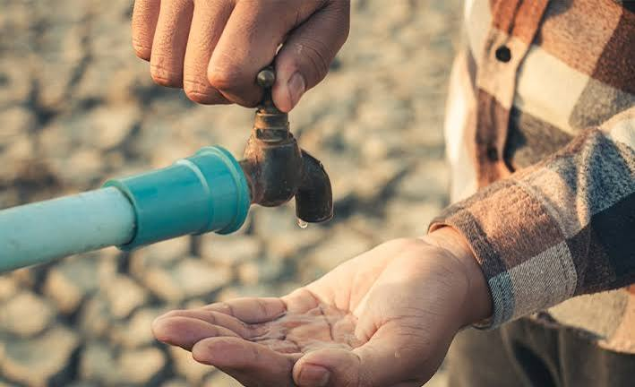
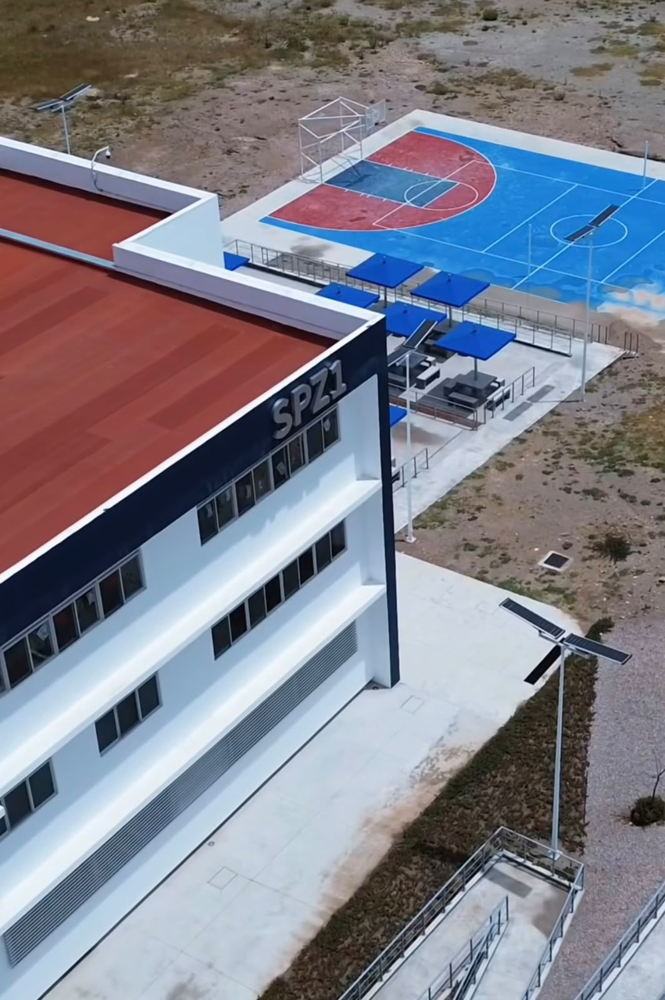
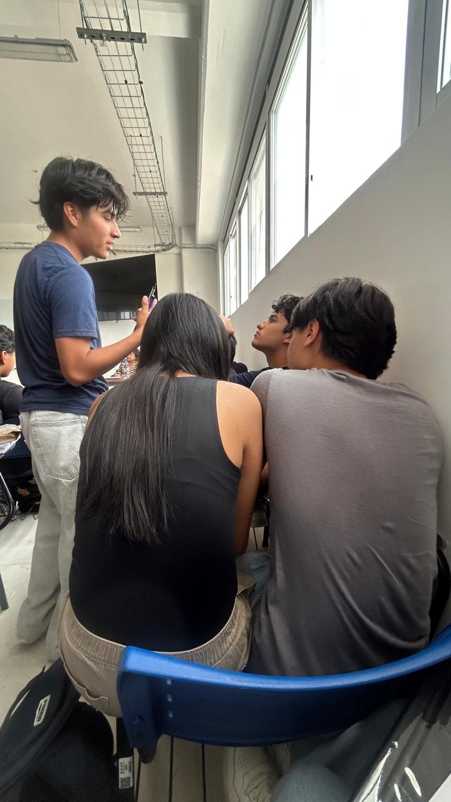
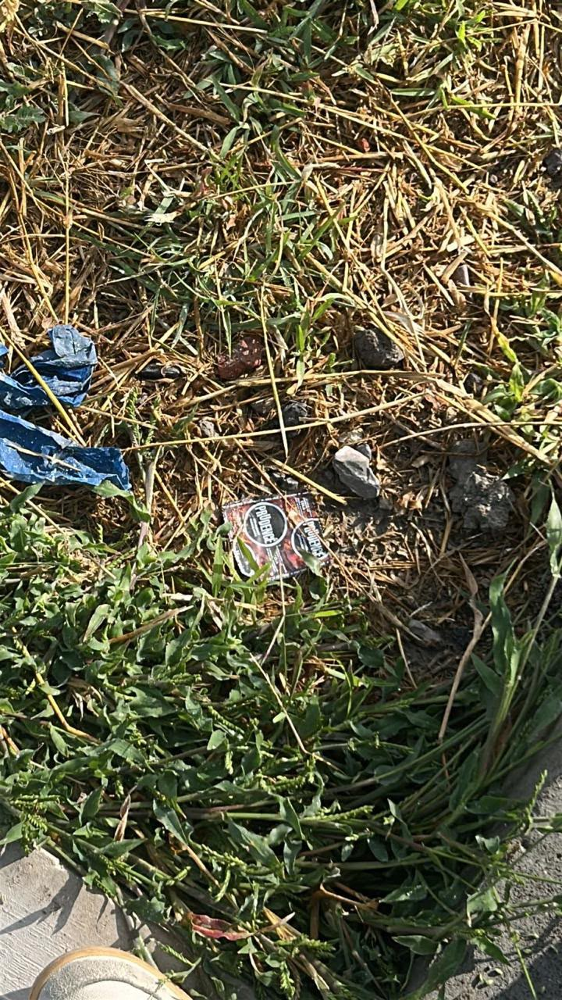
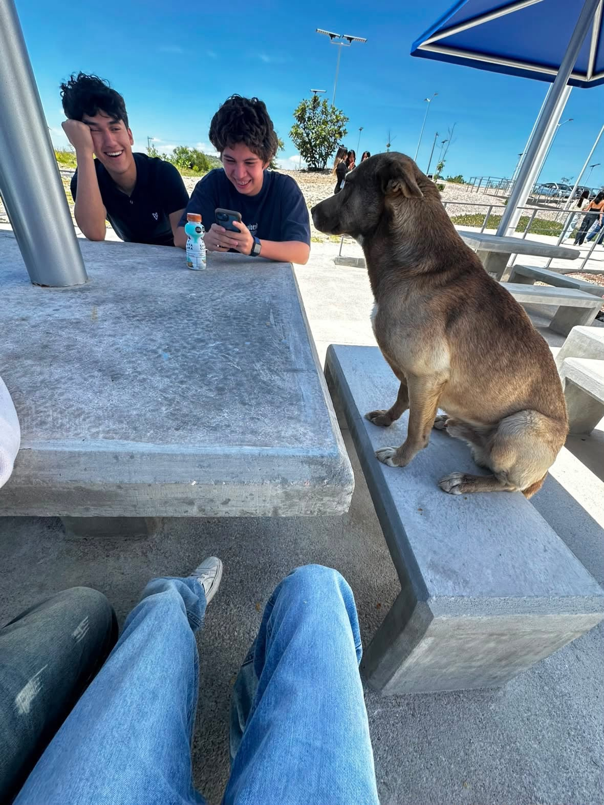
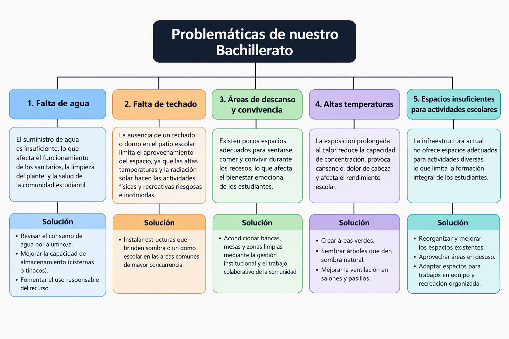

Cinco carencias urgentes de nuestro plantel y propuestas para resolverlas

Cada integrante aportó su talento para construir este proyecto
Responsabilidad: Digitalización del logotipo oficial, definición de la estética visual y redacción del lema de la casa productora.
Responsabilidad: Elaboración del ensayo académico, síntesis de las problemáticas escolares y validación de fuentes bajo la norma APA.
Responsabilidad: Conceptualización, estructura y elaboración gráfica del mapa semántico de problemas y soluciones.
Responsabilidad: Elaboración de la escaleta técnica para preproducción del cortometraje y asignación de créditos.
Responsabilidad: Estructuración de la plataforma digital, integración de contenidos multimedia y optimización de la navegación.

La falta constante de agua afecta a toda la comunidad escolar al limitar la higiene de los sanitarios y la limpieza del plantel.

La falta de domo o sombra en el patio perjudica a los alumnos en sus actividades físicas por la radiación solar directa.

Afecta a los estudiantes durante los recesos, ya que carecen de lugares dignos para sentarse a comer o convivir.

Las altas temperaturas en el aula afectan la salud y concentración de los alumnos, generando cansancio y dolores de cabeza.

Limita el desarrollo académico y en equipo de la comunidad estudiantil al depender únicamente del pupitre tradicional.

Se presenta la situación general del bachillerato y se plantea que existen problemas de infraestructura y servicios que afectan a los estudiantes.
Se muestra o explica la dificultad que provoca la falta de agua en sanitarios y limpieza, se plantea mejorar el almacenamiento y fomentar el uso responsable.
Se aborda la exposición directa al sol y las altas temperaturas en el patio, se propone instalar un domo o estructuras que proporcionen sombra.
Se explica que hacen falta lugares cómodos para sentarse, comer y convivir durante los recesos, se propone colocar bancas, mesas y acondicionar áreas comunes.
Se muestra cómo el calor puede provocar cansancio, dolor de cabeza y dificultades para concentrarse, se plantean árboles, áreas verdes y mejor ventilación.
Se explica que existen pocas áreas destinadas a trabajos en equipo y actividades recreativas, se propone aprovechar y reorganizar espacios que estén en desuso.
Se reúnen las propuestas principales: mejorar el suministro de agua, instalar techados, acondicionar áreas de descanso, crear áreas verdes y aprovechar espacios disponibles.
Se plantea que mejorar estas condiciones requiere la participación de autoridades, docentes y estudiantes para construir un entorno escolar más digno y seguro.
Carlos: Narrador y coordinador general
Ivania: Encargada e investigadora de soluciones ambientales
Eduardo: Encargado e investigador de problemas de agua
Santiago Rodríguez: Investigador y encargado de infraestructura
Santiago Varillas: Investigador y encargada de espacios comunes
La escuela es el espacio donde convivimos, aprendemos y nos formamos cada día. Sin embargo, en nuestro bachillerato enfrentamos carencias básicas de infraestructura y servicios que impactan directamente en nuestra salud, comodidad y rendimiento académico. Es por eso que presentamos cinco problemáticas urgentes del plantel junto con propuestas viables para transformar nuestro entorno en un lugar digno y seguro.